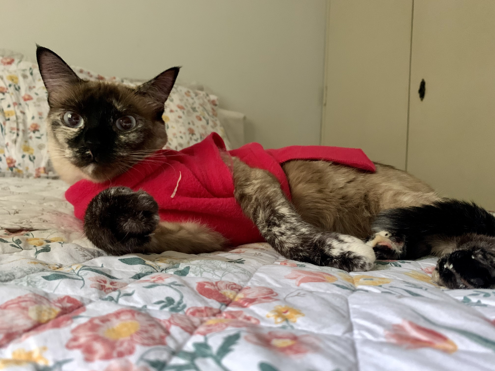

O Quarteto Fantástico é formado por 1 cachorra e 3 gatas, sendo que duas são gêmeas. Elas fazem parte da Casa das 7 Mulheres, pois são tutoradas por uma mãe e suas duas filhas. Todas as peludinhas são vira-latas e adotadas. E todas acabaram ficando mal acostumadas, devido a excesso de mimos. Ao verem as fotos das pequenas divas, vocês entenderão porque foi fácil estragá-las. Vamos conhecê-las?
Vira-lata com pinta de Border Collie, Zara Lupita Wilson completou 13 anos em Outubro de 2021 e é a mais velha do grupo. Suas comidas preferidas são sopa, couve, brócolis e couve-flor. Mas também adora filar qualquer guloseima que as tutoras estejam comendo. Sua pessoa preferida é a mãe da casa, que a resgatou na rua após não resistir ao seu olhar pidão. Seu esporte favorito é dormir no sofá. Rolezeira, adora passear de carro. Zara também tem conflitos de personalidade e às vezes acha que é um gato.
Cheia de manias, Zara ama tomar banho e também adora usar roupas. Tem um guarda-roupas que daria inveja a qualquer criança e já protagonizou birras em mega lojas de pets por querer ganhar a roupa que experimentou. Ela também odeia homens e detesta que encostem nela quando está dormindo. Sai resmungando como a velhinha ranzinza que é. Safadeza que chama, né?
Mischa Catarina Romanoff, também conhecida penas como Mischa, ou como qualquer nome de comida que se assemelhe a ela, é a mais velha das gatinhas e completou 9 anos em Março de 2021. Mischinha é a gatinha mais falante da casa. Você faz uma pergunta e ela responde com um miadinho rouco. Mal acostumada, pede petisquinhos dia sim, e no outro também. Sua pessoa preferida também é a mãe da casa, mas onde um ou mais estiverem deitados com edredom, lá estará ela. Quando quer dormir, sai chamando a mãe da casa em direção ao quarto.
Ao contrário da Zara, DETESTA roupinhas e já descobriu habilidosamente como tirar qualquer uma em 10 segundos. Seus esportes preferidos são dormir, deitar em cima de celulares e controles remotos, e rebater no ar bolinhas jogadas pra ela. Suas comidas preferidas são Mochi (sim, aquela massinha de arroz com recheio de doce de feijão), patezinhos e petisquinhos.
Manu, vulgo Agente do Caos, é a sialata vesguinha mais fofa e sapeca que você vai conhecer. Foi adotada em Janeiro de 2020, aos 6 meses como companhia para a Mischa (No ano anterior, nosso gato, Boris, infelizmente nos deixou após 15 anos de muito amor e aventuras). Se a Mischa é mais quietinha, Manu chegou para agitar as coisas. Bagunceira, sua atividade preferida é abrir gavetas, jogar roupas pra fora e deitar dentro. Também adora destruir portas que a impedem de entrar no cômodo que ela quer e sair de onde ela não aguenta mais ficar. Atormentar e brincar com sua gêmea, Malu, se tornou um hobby desde que se reencontraram.
Suas comidas preferidas são mamão, melão, petiscos da Zara, cigarras e besourinhos. Manuela (como é chamada na hora da bronca) adora passar o dia dormindo para dar plantão à noite e miar dramaticamente, para acordar as outras habitantes da casa. Quando está de roupinha, anda toda estranha, mas também vira a gatinha mais dengosa e super fã de colo. Seus esportes preferidos são beber água do chuveiro após o banho das humanas e brincar com qualquer coisa que faça barulho.
Malu, a derrubadora. Gêmea da Manu, tem uma história triste que felizmente terminou bem. Foi a última a ser adotada de 4 irmãos. Ainda que ela seja a gatinha mais meiga e doce, o adotante a devolveu e ela ficou na casa desta que vos fala temporariamente. O temporariamente se tornou permanente. E eu, a filha mais velha, ganhei uma companheirinha.
Lulu chegou super tímida e desconfiada, sempre com medo de aproximação. Aos poucos, foi aprendendo a confiar nas humanas e hoje circula com tranquilidade pela casa. Diferente das irmãs felinas, Malu usa roupa e anda normalmente, como se tivesse nascido pra isso. Maria Luísa (nome na hora da bronca) tem como esporte preferido derrubar objetos que as humanas deixam espalhados por aí. Humilde, não tem preferência por nenhuma comida em especial, nem faz muito caso de petisquinhos. O que ela gosta mesmo e de ficar na janela observando o movimento; se exibir na câmera do computador desta que vos fala, quando está tendo aula; e dormir junto com sua humana preferida na casa, moi.
E-mail: historias-adocao@quartetofantastico.com.br